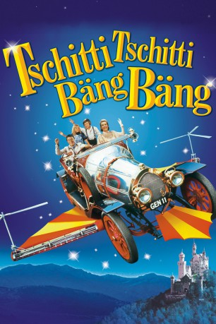

Auszeichnungen: für 1 Oscars nominiert
 gesehen am 09.04.2016
gesehen am 09.04.2016Alternativ: Chitty Chitty Bang Bang
Auszeichnungen: für 1 Oscars nominiert gesehen am 09.04.2016
 
 IMDB-Wertung: 6.9 / 10
IMDB-Wertung: 6.9 / 10  Metascore:
Metascore: 
Britische Fantasy-Komödie aus dem Jahr 1968. Caractacus Potts erfreut seine Kinder Jemima und Jeremy mit einem restauriertem Rennwagen. Zusammen mit der charmanten Miss Truly Scrumptious reisen sie, angetrieben durch Potts Fantasie, mit ihrem fliegenden Oldtimer in ein fantastisches Märchenland. Mit Diyk Van Dyke in der Hauptrolle.
Jahr: 1968
Dauer: 145 Minuten
FSK: 0
Land: England Studio: United ArtistsTonspuren: DTS - ,
Untertitel: Deutsch,
Auflösung: 1080p (1920x880) Größe: 10342 MB
Genre: Abenteuer, Fantasy, Familie, Musical
Regisseur: Ken Hughes
Drehbuch: Ian Fleming, Roald Dahl, Ken Hughes, Richard Maibaum
Soundtrack: Richard M. Sherman, Robert B. Sherman, Irwin Kostal
Darsteller:
 Dick Van Dyke als Caractacus Potts
Dick Van Dyke als Caractacus Potts Gert Fröbe als Baron Bomburst
Gert Fröbe als Baron Bomburst James Robertson Justice als Lord Scrumptious
James Robertson Justice als Lord Scrumptious Barbara Windsor als Blonde
Barbara Windsor als Blonde Desmond Llewelyn als Coggins
Desmond Llewelyn als Coggins Peter Arne als Captain of Guard
Peter Arne als Captain of Guard Victor Maddern als Junkman
Victor Maddern als Junkman Arthur Mullard als Big Man
Arthur Mullard als Big Man Larry Taylor als Lieutenant
Larry Taylor als Lieutenant Harry Fielder als Soldier at Castle , uncredited
Harry Fielder als Soldier at Castle , uncreditedDatei: X:\Kinder Filme (N-Z)\Tschitti Tschitti Bäng Bäng (1968, FSK0, 1920x880).mkv seit 12.02.2016
Festplatte: Kinder-Filme+Trick
 Es gibt insgesamt 87 Filme in der Gruppe 'Kinder Filme (N-Z)'
Es gibt insgesamt 87 Filme in der Gruppe 'Kinder Filme (N-Z)'